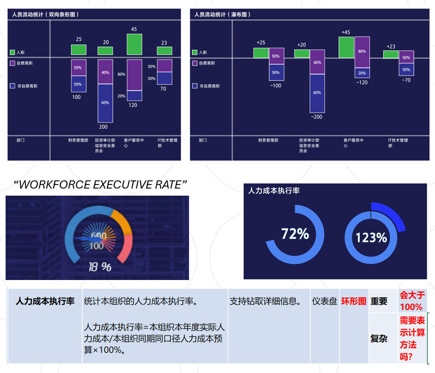
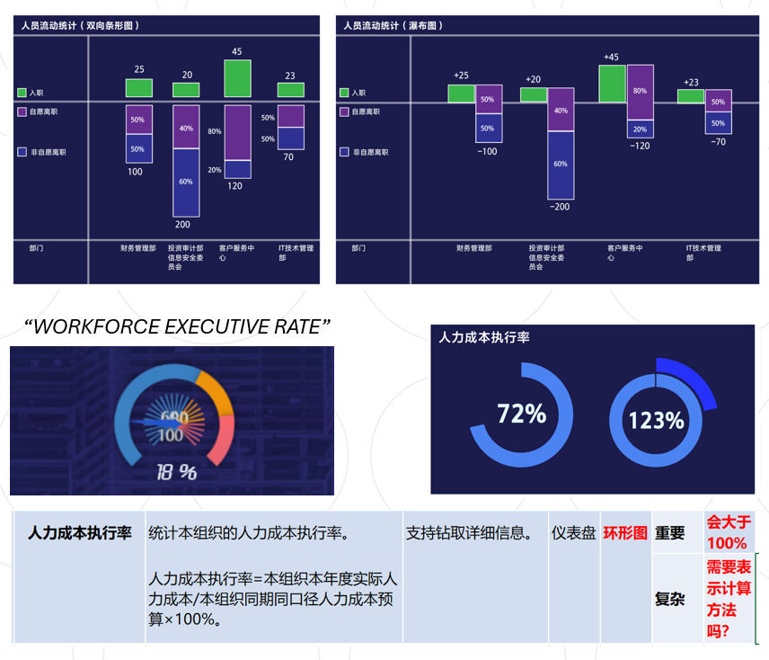

DHR Data Dashboard Iteration Project
Data Visualization / Internship / 2024
This is a cooperative project with Neusoft, a leading Chinese Information Technology Services Corporation. I use my expertise to support their binual iteration of a digital human resource management systems.
 For work that pursues efficiency and accuracy, higher requirements on the readability of the data dashboard is always on the top. Therefore, my practice in this work deconstructed and reorganized the content, structure, and logic of the data dashboard as a basis for building satisfying usage experience. This not only requires me to establish a preliminary understanding of human resource management, but also requires me to build the usage habits of the target group based on this.
I first categorized and organized dozens of indicators according to their statistical meanings, and then classified them into five distinct usage scenarios. Then, I conducted a strict proofreading of the visual representation of data in each charts based on statistical and visual principles to prevent duplication, misunderstanding and counterintuitive expressions. Next, I sorted out the order and combination of the charts according to different logical sequences to ensure the smoothness of the chart reading, such as: from short terms to long terms, from the locals to the overall, from the essentials to additions.

As a cutting-edge research direction, the digital transformation of management has many unknown needs of users. Therefore, I use semiotic analysis in user experience research to build a new experience for users based on universal narrative. To make an analogy, I regard each chart as a window in the comic to support users in interpreting data with a coherent narrative, and let the knowledge unfold naturally according to the usage scenarios of the executive's work.
For work that pursues efficiency and accuracy, higher requirements on the readability of the data dashboard is always on the top. Therefore, my practice in this work deconstructed and reorganized the content, structure, and logic of the data dashboard as a basis for building satisfying usage experience. This not only requires me to establish a preliminary understanding of human resource management, but also requires me to build the usage habits of the target group based on this.
I first categorized and organized dozens of indicators according to their statistical meanings, and then classified them into five distinct usage scenarios. Then, I conducted a strict proofreading of the visual representation of data in each charts based on statistical and visual principles to prevent duplication, misunderstanding and counterintuitive expressions. Next, I sorted out the order and combination of the charts according to different logical sequences to ensure the smoothness of the chart reading, such as: from short terms to long terms, from the locals to the overall, from the essentials to additions.

As a cutting-edge research direction, the digital transformation of management has many unknown needs of users. Therefore, I use semiotic analysis in user experience research to build a new experience for users based on universal narrative. To make an analogy, I regard each chart as a window in the comic to support users in interpreting data with a coherent narrative, and let the knowledge unfold naturally according to the usage scenarios of the executive's work.